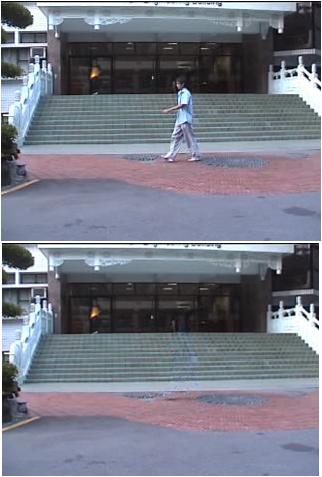
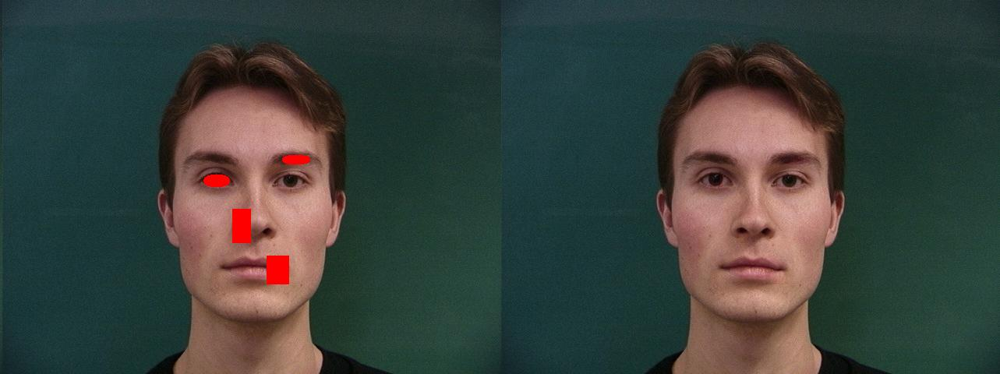
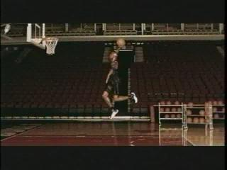
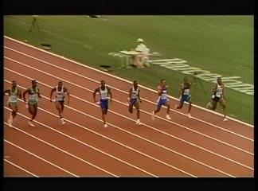
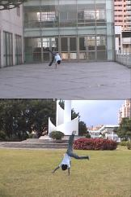
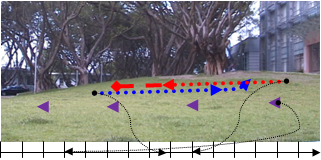
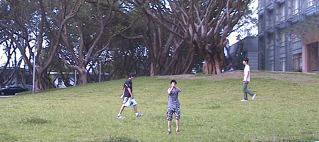
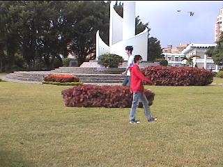

Video Inpainting and Implant via Diversified Temporal Continuations
 demo
Recent interesting issues in video inpainting are defect removal and object removal. We take one more step to replace the removed objects in a video sequence by implanting objects from another video. Before implant, we improve an exemplar-based image inpainting algorithm by using a new patch matching strategy which incorporates edge properties. The data term used in a priority computation of candidate patches is also redefined. We take varieties of temporal continuations of foreground and background into consideration. A motion compensated inpainting procedure is then proposed. The inpainted video backgrounds are visually pleasant with smooth transitions. A simple tracking algorithm is then used to produce a foreground video, which is implanted into the inpainted background video.
Face Inpainting by Feature Guidance

Face image partially occluded or damaged can be repaired automatically. We proposed a new inpainting algorithm, based on patch guidance deduced from an existing face database, to recover the damaged portions. This newly proposed concept of guided inpainting method produces seamless faces which are hardly seen drawbacks.
Video Falsifying by Motion Interpolation and Inpainting
We change the behavior of actors in a video. For instance, the outcome of a 100-meter race in the Olympic game can be falsified. We track objects and segment motions using a modified mean shift mechanism. The resulting video layers can be played in different speeds and at different reference points with respect to the original video. In order to obtain a smooth movement of target objects, a motion interpolation mechanism is proposed based on continuous stick figures (i.e., a video of human skeleton) and video inpainting. The video inpainting mechanism is performed in a quasi-3D space via guided 3D patch matching for filling. Interpolated target objects and background layers are fused by using graph cut. It is hard to tell whether a falsified video is the original.The proposed technique can be used to create special effects in movie industry.
 Source Inpainting Falsfying
 Source Inpainting Falsfying
Video Falsifying for Special Effect Production
 demo
Video Falsifying is a technique for generating fake video by altering, combining, or creating new video contents. For instance, the outcome of a 100-meter race can be changed. Alternatively, the winner of a horse race can be created from combined videos. The technique is for special effect production in movie industry. We demonstrate how to use our video falsifying techniques in special effects production.
Motion extrapolation for video story planning
We create video scenes using existing videos. A panorama is generated from background video, with foreground objects removed by video inpainting technique. A video planning script is provided by the user on the panorama with accurate timing of actors. Actions of these actors are extensions of existing cyclic motions, such as walking, tracked and extrapolated using our motion analysis techniques. Although the types of video story generated are limited, however, it is possible to use the mechanism proposed to generate forgery videos.

 demo
Motion Inpainting and Extrapolation for Special Effect Production
 demo
Special effect production is an important technology for movie industry. Although sophisticated equipments can be used to produce scenery such as fire and smoke, usually, the approach is expensive and perhaps dangerous. Can sceneries be re-produced based on existing videos using digital technology? The answer is yes but it is difficult. In this video demonstration, we propose new mechanisms using motion inpainting technologies. Dynamic texture can be altered and reused under control. In addition, actors with repeated motion can be interpolated or extrapolated and incorporated into the falsified scenery. We demonstrate using our tool to produce realistic video narratives based on existing videos.